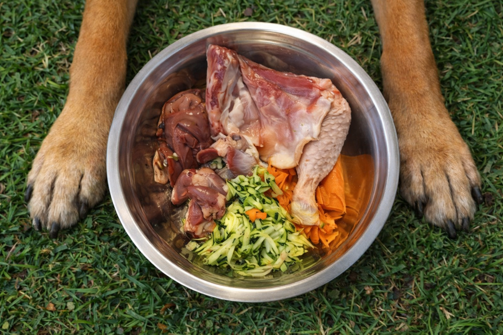
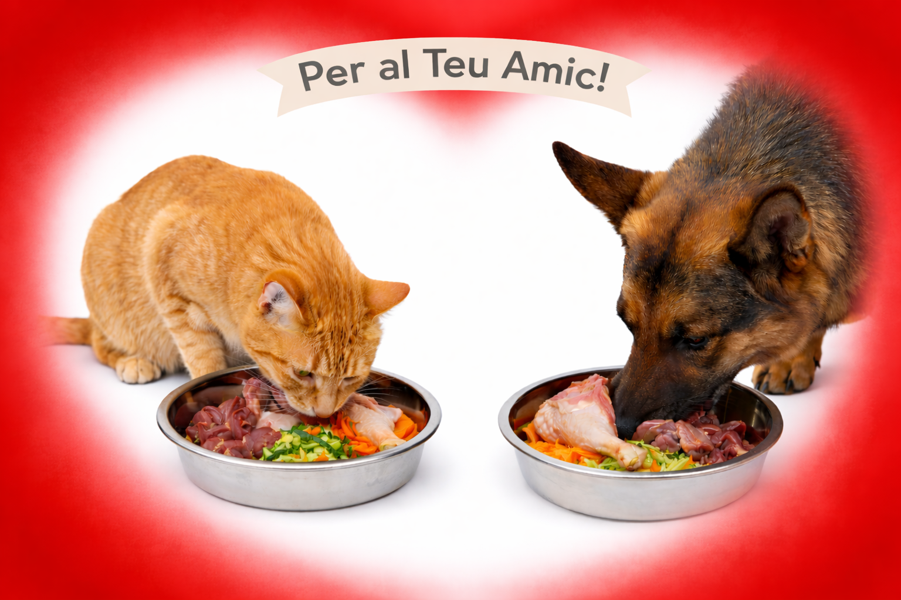
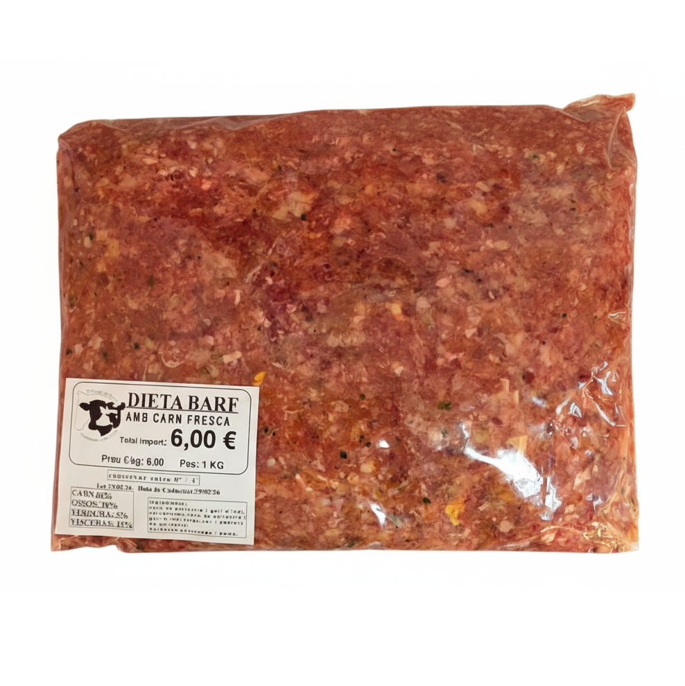
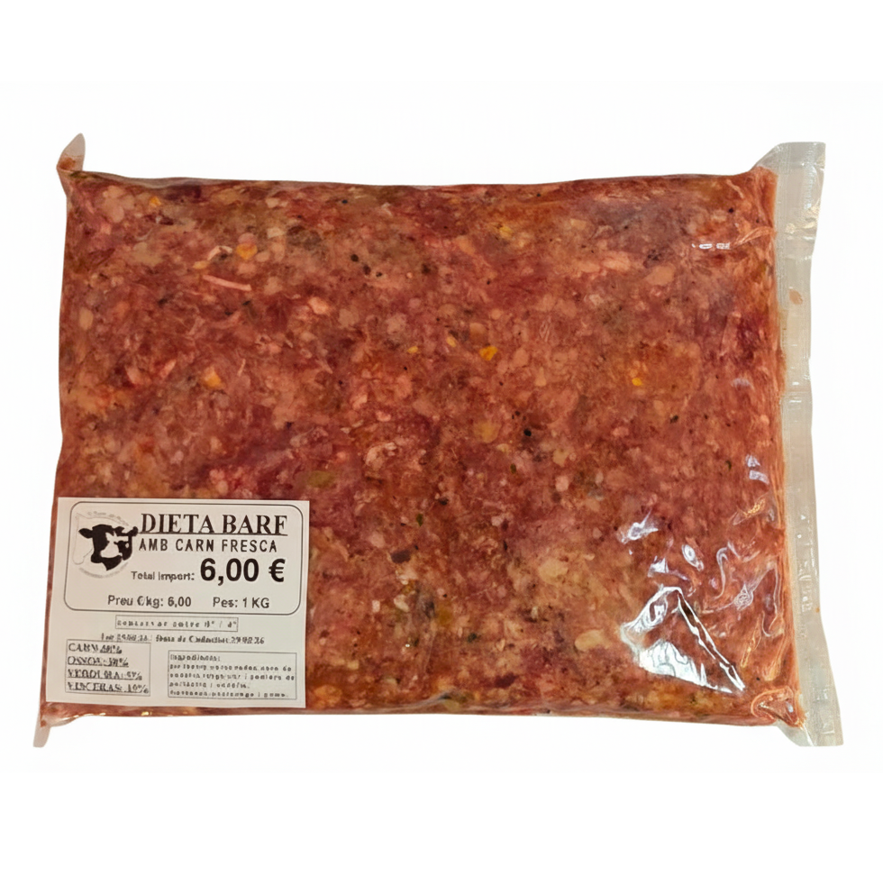
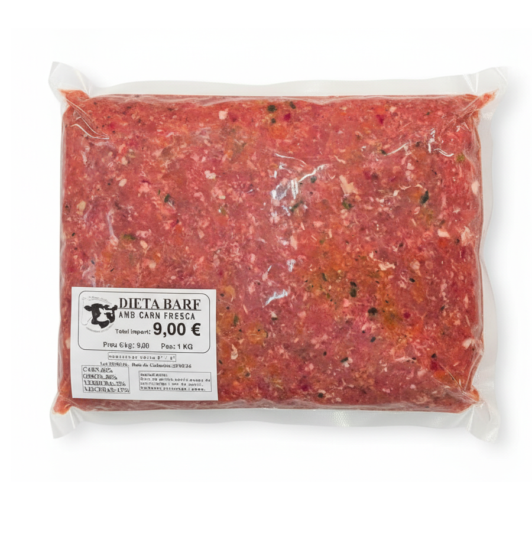
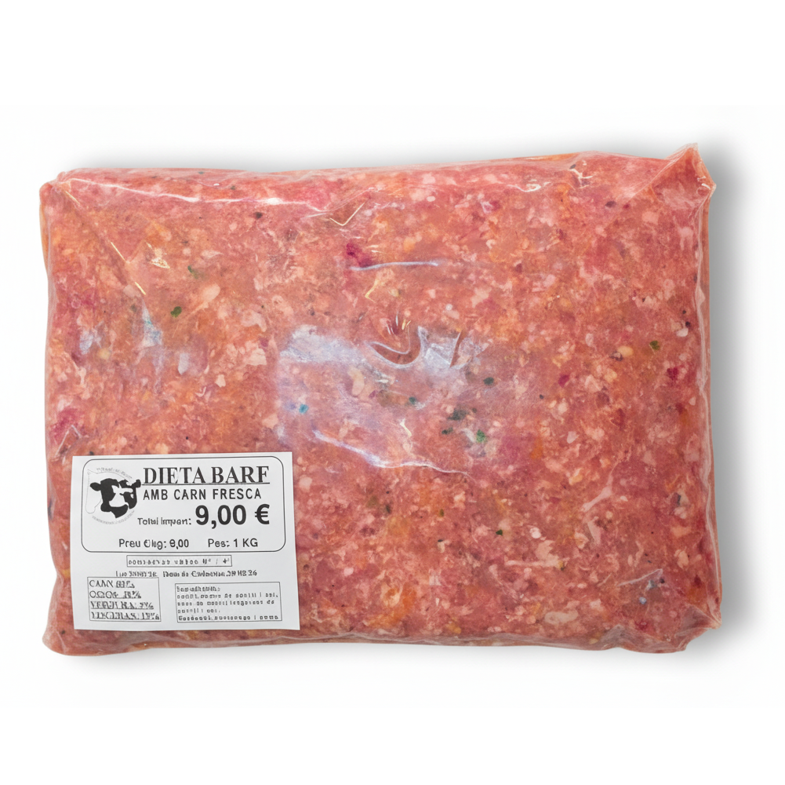

Carn fresca
Selecció de carns, vísceres i ingredients naturals preparats especialment per a la teva mascota.
Alimentació natural per a mascotes
Menús BARF per a gossos i gats elaborats amb carn fresca, menuts seleccionats i ingredients naturals.

Alimentació conscient
Selecció de carns, vísceres i ingredients naturals preparats especialment per a la teva mascota.
Calcula una quantitat orientativa segons el pes, l’edat, l’activitat i l’objectiu de la mascota.
BARFEAND neix de l’experiència i la selecció de producte d’El Rebost del Nord.

Per al teu amic
Receptes d’un quilogram elaborades amb carns, ossos carnosos, vísceres, verdura i fruita.
Calculadora BARFEAND
Indica les característiques de la teva mascota per obtenir una primera estimació de la quantitat diària.
Menús BARFEAND
Diferents receptes perquè puguis escollir la més adequada per a la teva mascota.

1 kgMenú BARFEAND
6,00 € / kg
Ingredients: carn de pollastre i gall d’indi, carcasses, fetge, cor i pedrers de pollastre, carbassó, pastanaga i poma.

1 kgMenú BARFEAND
6,00 € / kg
Ingredients: pollastre, carcanades, carn de vedella, fetge, cor i pedrers de pollastre i vedella, carbassó, pastanaga i poma.

1 kgMenú BARFEAND
9,00 € / kg
Ingredients: carn de poltre i conill, ossos de conill, fetge i cor de conill, carbassó, pastanaga i poma.

1 kgMenú BARFEAND
9,00 € / kg
Ingredients: conill, xai, ossos de conill, fetge i cor de conill i xai, carbassó, pastanaga i poma.
Preguntes freqüents
Conserva el producte sempre entre 0 °C i 4 °C i respecta la data de caducitat indicada a l’envàs. Un cop obert, mantén-lo refrigerat i segueix les indicacions de l’etiqueta.
La transició s’ha d’adaptar a cada mascota. Consulta amb un professional si tens dubtes sobre el procés.
Pots comprar-los online a El Rebost del Nord, amb recollida a la botiga o entrega disponible a Andorra.